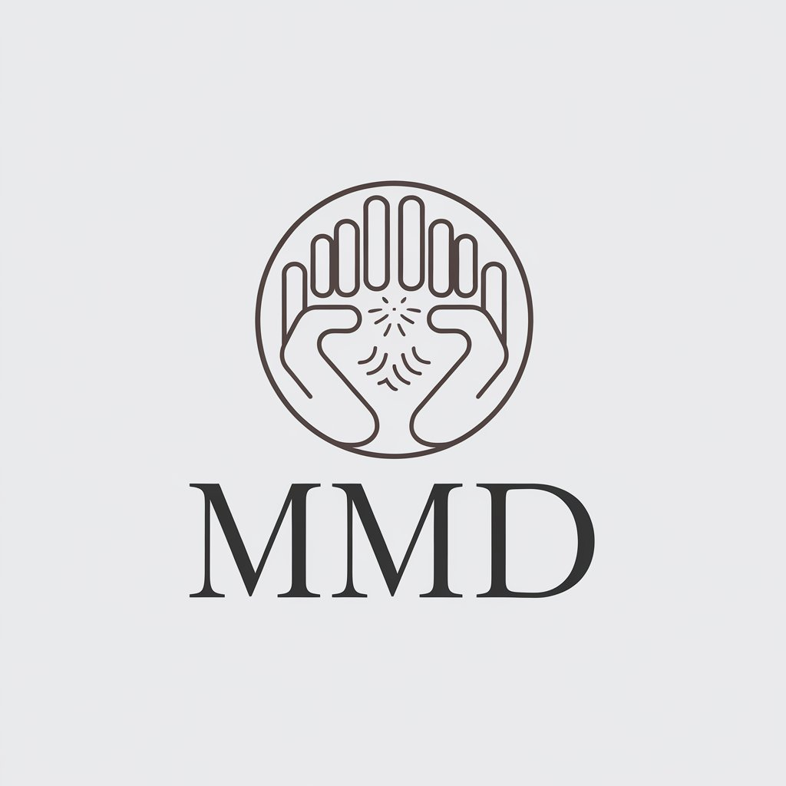

Úleva a relaxace přímo do vašeho domova

(Záda, šíje, horní končetiny, dolní končetiny)
baňky (statické)
5 Kč/Km (Účtuje se cesta tam i zpět)
V případě delší vzdálenosti (od 50 km) je cena za dopravu smluvní.

Provozovatel: Masérské, rekondiční a regenerační služby je MMD, se sídlem: Hradišťská 52/68, Těrlicko, 73542 IČ: XXXXXX Tel.: +420 739 950 965 E-mail: dominik.pospisil@outlook.cz Provozní doba: dle telefonických objednávek Oprávnění pro výkon činnosti: viz www.rzp.cz a IČ
Druh a rozsah poskytovaných služeb viz:
https://www.MMD.cz/nabídka/ Tyto služby jsou poskytovány v interiérech a exteriérech dle požadavků klienta.
Podmínky poskytnutí služby:
- přístup k pitné tekoucí teplé vodě
- dostatečné osvětlení místnosti
- možnost převléknutí se do pracovního oděvu
- dostatečný prostor pro rozložení přenosného masérského stolu či podložky v případě masáže na zemi
- K masážím jsou využity produkty od firem Saloos, Janssen, Thalaspa a další k tomu určené.
Zásady provozu:
– prevence vzniku infekce a jiných onemocnění, včetně podmínek desinfekce V sídle firmy je vyčleněný omyvatelný nábytek vhodný ke skladování čistého i špinavého prádla, masážních a desinfekčních prostředků. Je zamezeno při praní, sušení, žehlení a ukládání špinavého osobního prádla styku s civilními věcmi. Pro transport pomůcek je využívána cestovní taška a obal na masérské lůžko, vše je udržováno v maximální čistotě a desinfikováno.
- Pracovní oděv je vždy čistý, dobře udržovatelný a je používán pouze k masážím. Oděv je z materiálu, který se dá dobře vyvářet a žehlit, frekvence jeho výměny je dle potřeby, minimálně každý den.
- Jsou dodržovány hygienické zásady mytí rukou, nehty jsou vždy čisté a krátce ostříhané. Při transportu věcí ke klientům je s pomůckami nakládáno opatrně, aby nedošlo ke kontaminaci. Pro práci s desinfekcí a manipulací se špinavým prádlem jsou používány ochranné pracovní pomůcky – zejména rukavice. Při náhodné kontaminaci pokožky provozovatele nebo zákazníka biologickým materiálem (zejména krví) musí být provedena desinfekce kontaminovaného místa desinfekčním přípravkem s virucidním účinkem. K provozu služeb jsou používány jednorázové hygienické pomůcky. Nelze provádět výkony pokud jsou shledány kontraindikace k masáži.
Desinfekce:
- provádí se omýváním, otíráním, postřikem formou pěny nebo aerosolem – důležité je dodržování doby expozice a koncentrace při použití desinfečních přípravků s mycími a čistícími vlastnostmi lze spojit etapu čištění a desinfekce k desinfekci se volí takové přípravky a postupy, které nepoškozují desinfikovaný materiál, nejsou toxické ani dráždivé k zabránění vzniku selekce, případně resistence mikrobů vůči přípravku dlouhodobě používanému, jsou střídány přípravky s různými aktivními látkami
Úklid pomůcek a manipulace s prádlem:
– úklid lůžka a pomůcek je prováděn bezprostředně po ukončení masáže každého klienta
– čisté jednorázové pomůcky a pracovní oblečení je uloženo v čisté cestovní tašce popřípadě v sídle firmy v určených prostorách
– k transportu použitého, znečištěného osobního prádla je využito igelitové tašky, v případě znečištění pracovního oděvu je k dispozici náhradní čistý oděv
– veškerý znečištěný pracovní oděv je ukládán a prán mimo civilní ošacení
Za dodržování výše uvedeného odpovídá: Mgr. Dominik Pospíšil